Silverwood
The current expedition region: one readable trail, a safe resurrection clearing and three distinct creature territories.
Agutroil presents · Online fantasy RPG
Online Multiplayer Alpha
A 2D MMORPG inside an immersive 3D fantasy world.
Explore · Fight · Progress · Build · Connect
Follow forest trails, descend into forgotten ruins and shape your own adventurer. Form a party of up to five players and share the journey through Silverwood and beyond in the online multiplayer alpha.
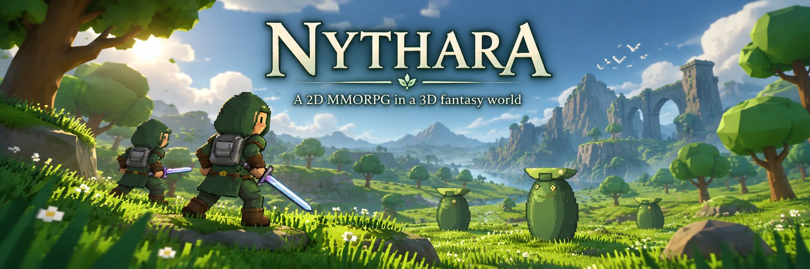
01 / Game overview
Find your path through a world of forest trails, ancient ruins and creatures worth learning to fight. Choose your skills, discover new gear and grow a character whose story continues between adventures.
Discover connected fantasy regions, hidden paths and ancient ruins.
Battle creatures, elites and bosses with real-time skills and readable attacks.
Collect equipment, materials and rewards from enemies, quests and dungeons.
Build your character through levels, skills, equipment and loadouts.
Enter handcrafted encounters and face powerful bosses.
Form parties of up to five adventurers in Nythara's online multiplayer alpha.
Loading the current catalogue…
One connected adventure: the same character, build and equipment follow you from the open trail into every dungeon.
02 / World & exploration
Travel through a hand-built 3D landscape with the character and charm of 2D adventurers. Forest trails, ancient landmarks and portals connect the open world to the depths of its dungeons.
Begin in Dawnwatch and venture into Whispering Grove. Beyond the Hollow Ruins, the road opens to Silverwood: three creature territories, an ancient arch and the portal to Moonroot Sanctum.
Forest, highlands, mire, coast, frost and ash give the wider world its shape. Silverwood and the two dungeons are the heart of the current adventure, with further regions ready to explore as the world grows.
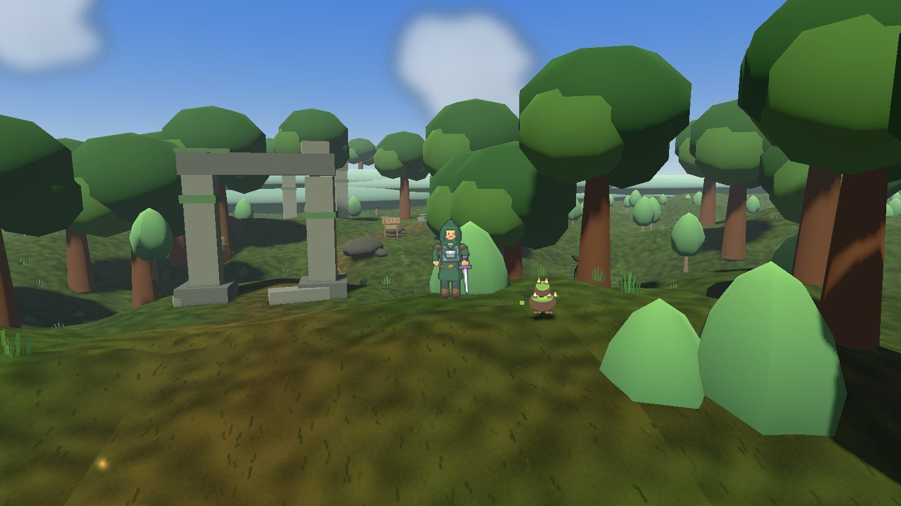
The current expedition region: one readable trail, a safe resurrection clearing and three distinct creature territories.
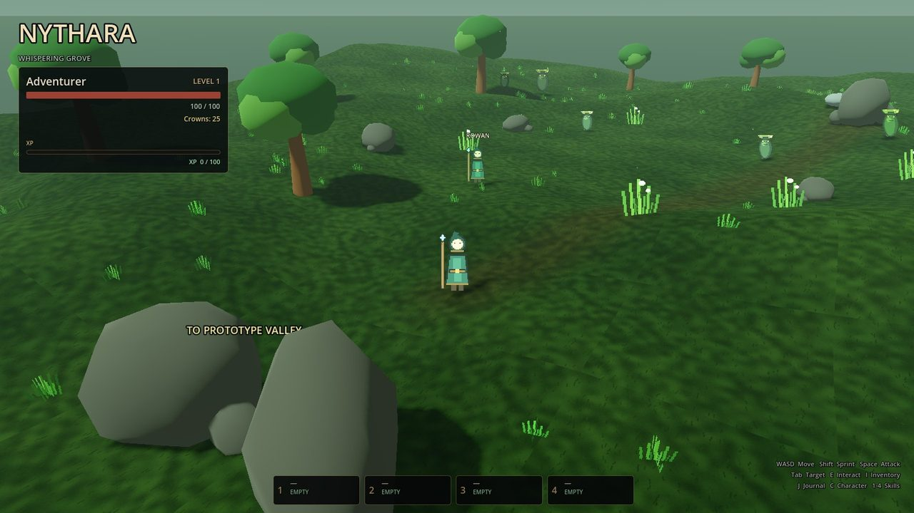
Your first forest encounters: Mosslings, Thornspitters and Stonebacks stand between you and the road into the Hollow Ruins.
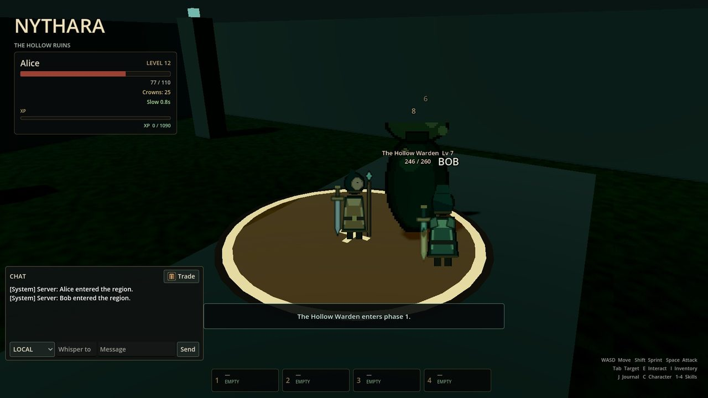
Beneath the grove: root-choked halls, elite encounters and the Hollow Warden at the end of the descent.
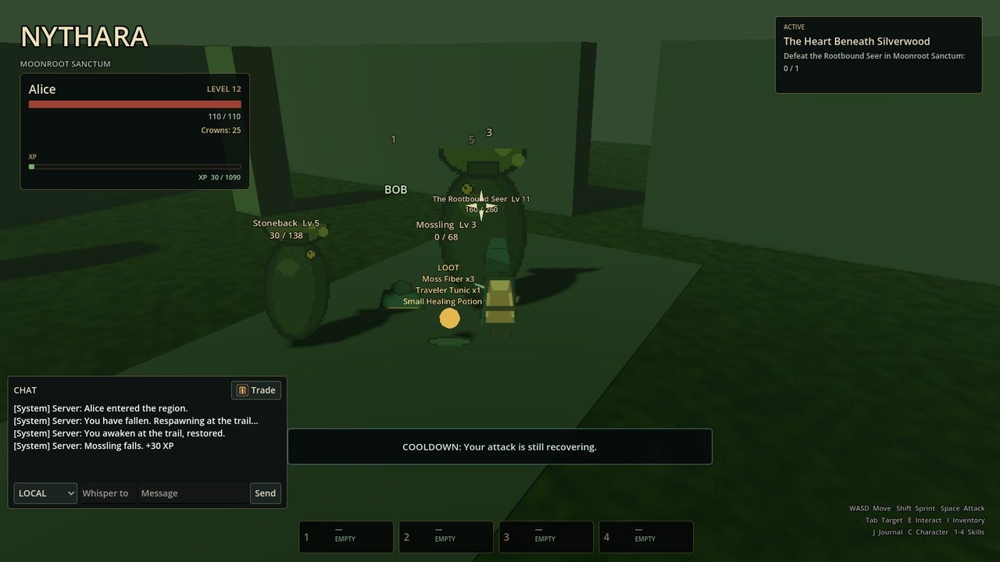
A sealed sanctuary beneath Silverwood. Face the Rootbound Seer in a three-phase battle at the end of the current adventure.
Plan your next journey: discover the places, connections and creatures in the world database →
03 / Silverwood
From the safety of Resurrection Clearing to the shadows of the deep grove, each turn brings a different encounter. Follow the trail alone or meet other adventurers along the way. Silverwood opens after Echoes Beneath the Grove.
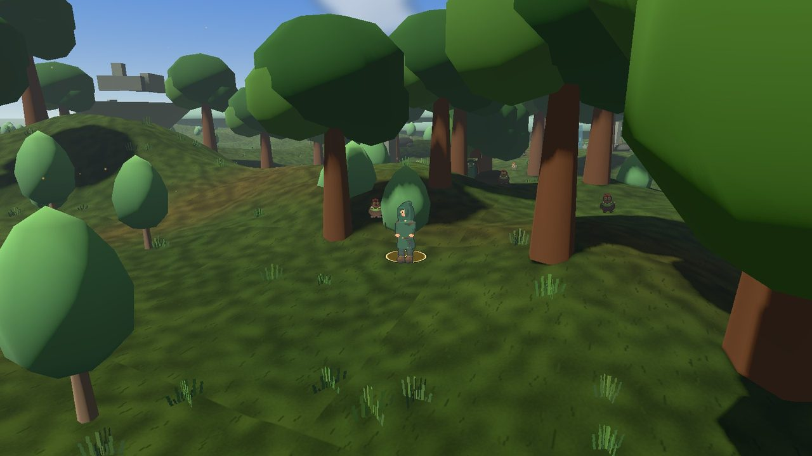
Low thorns and dense growth surround the first stretch of trail. Watch for Briarlings among the rocks and a wandering Mossling.
Beyond the thicket, standing stones mark a darker clearing. Gloom Moths claim this quiet stretch of forest.
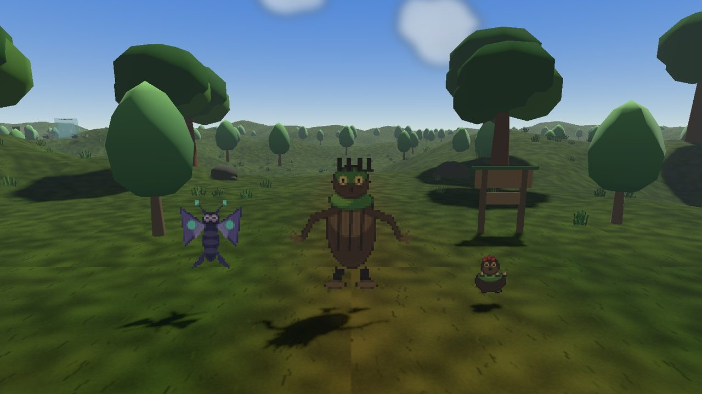
The deep grove beneath the ancient arch. Root Sentinels are the largest forest creature and anchor the approach to the portal.
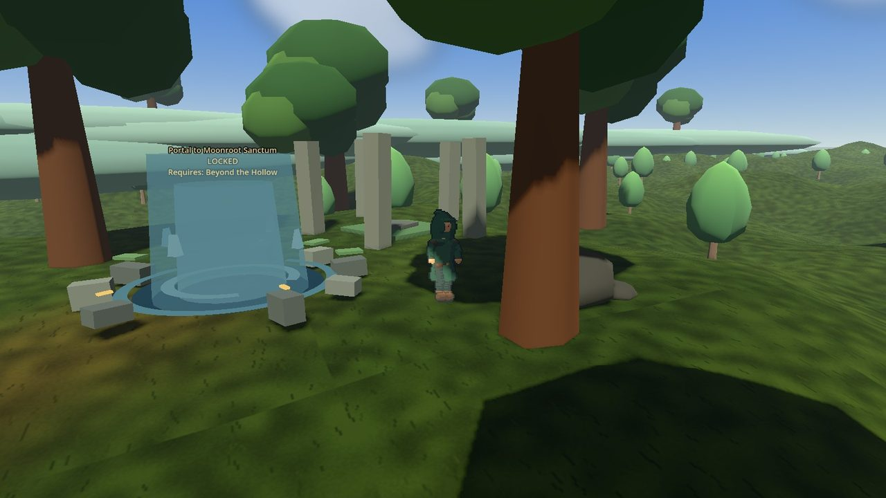
Turquoise runes circle a stone ring filled with cyan light. Complete the required quest to open the way into Moonroot Sanctum.
04 / Combat & progression
Combat, quests, gear and travel share one persistent character. The same build and equipment carry from the open world into a dungeon — and into shared encounters with other players.
Telegraphed melee and heavy attacks, ranged projectiles, Poison and Slow, boss phases and shared online encounters.
Levels 1–20, separate attribute and skill points, three ranks per skill and a four-slot loadout with a free reset.
Compare stats and rarity, equip weapons, armor and accessories, and decide which finds to keep, craft with or sell before the next journey.
Branching dialogue, a journal and tracker, and a progression chain from the Hollow Ruins into Silverwood and Moonroot Sanctum.
Portals gated by level, quests, items and keys, plus region discovery, a world map and a minimap.
Crowns, a vendor with buy and sell offers, and loot that feeds crafting, equipment and the next expedition.
Gathering nodes, recipes, a workbench and crafted gear such as the Grove Blade and Mosswoven Vest.
Learn each boss's attacks and changing phases. Earn a first-clear reward, then return for another chance at rare equipment.
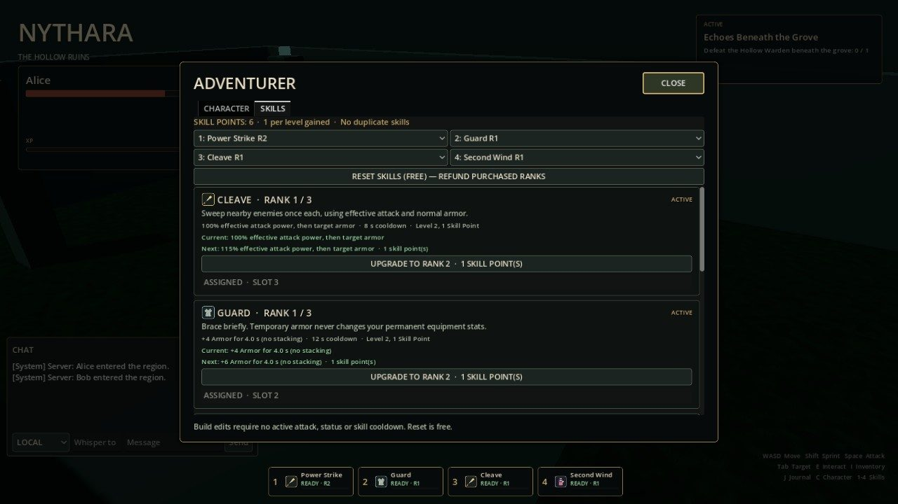
05 / Creatures & bosses
Learn the creatures that call each forest home. Quick melee attackers, distant projectiles and heavy strikes ask for different tactics. Nearby adventurers can join the fight in the online alpha.
Small melee creature. The first fight in Whispering Grove and Silverwood.
Ranged attacker with a telegraphed projectile and a fragile frame.
Heavy hitter with a wide wind-up ring. Step out, then punish.
Thorny Silverwood melee creature that holds the Briar Thicket.
A winged inhabitant of the shadowed Gloom Glade.
The largest forest creature: slow, heavy and deliberate in the grove.
The guardian at the end of your first descent. Read its attacks, survive its phases and earn your character's first-clear reward.
Three phases guard the moonroot heart. Bring the skills and Warden gear earned on the journey through the Hollow Ruins and Silverwood.
06 / Dungeons
Follow the path beneath the forest into two hand-built dungeons. Face their guardians alone or alongside other adventurers, collect rare loot and carry each first clear with your character.
Descend beneath Whispering Grove into root-choked halls and elite encounters. The Hollow Warden stands at the end of the first chapter.
A moonlit root sanctuary behind the Silverwood portal. The Rootbound Seer fights through three phases.
07 / Online multiplayer alpha
Nythara brings independent players together in one shared, server-authoritative fantasy world. Meet other adventurers, form parties, explore Silverwood together and enter dungeons as a group.
Gather up to five players around a party leader, send secure party invitations and keep in touch through party chat.
The party HUD shows names, levels and health, with region information and a reconnecting status when a member is away. Characters, combat, enemies, progression and world state stay under server authority.
Reconnect support keeps party membership intact during short connection interruptions, including dungeon runs. Return with the same character without rebuilding the group.
Online Multiplayer Alpha Online multiplayer remains in alpha. Public server infrastructure and broader social discovery are still in development.
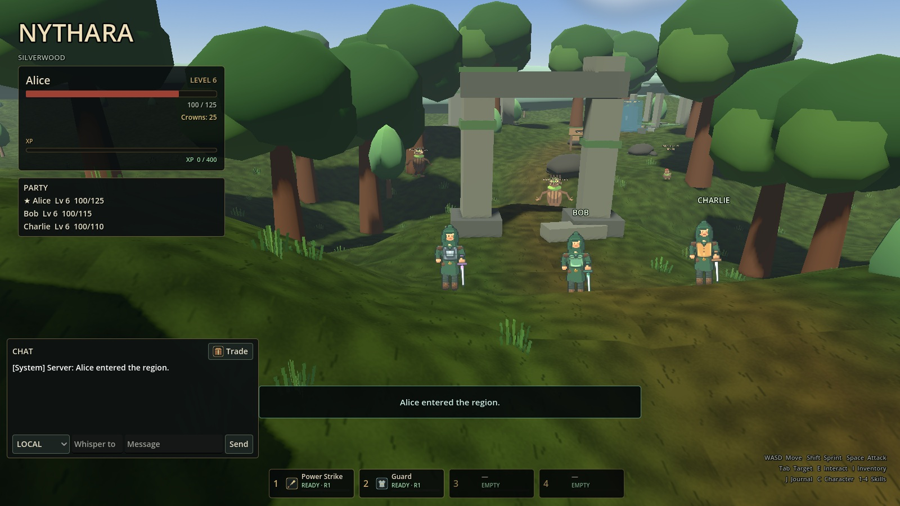
A party of adventurers explores Silverwood with a shared party HUD for leader, health, level and region information.
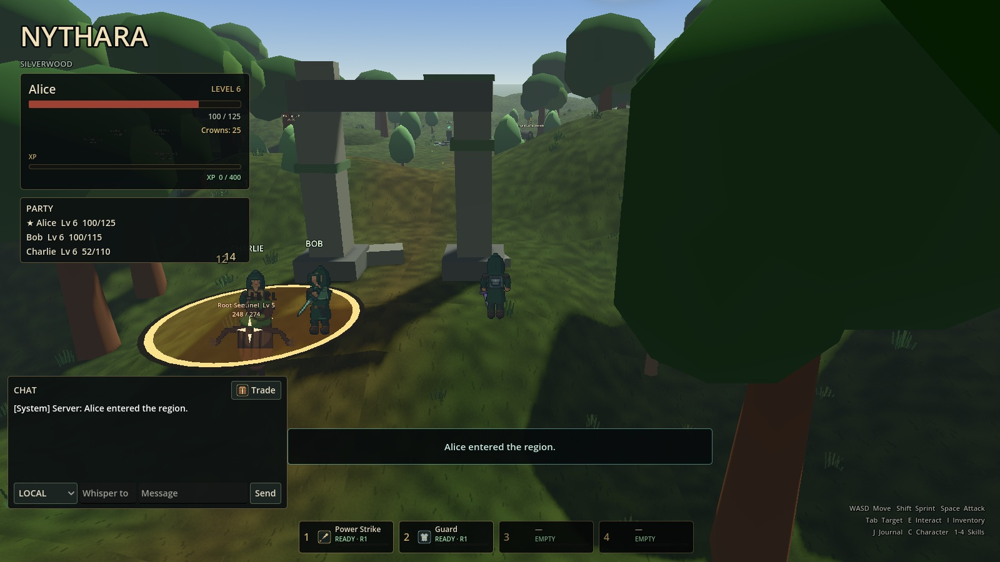
Party members fight the same creatures while combat, health and enemy state remain under server authority.
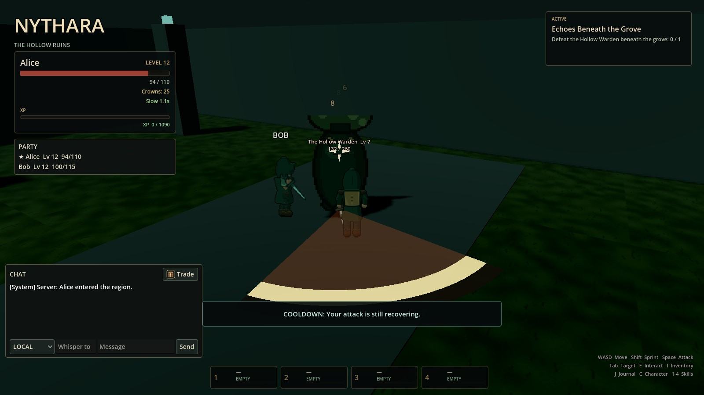
Enter multiplayer dungeons such as Moonroot Sanctum and The Hollow Ruins as a party. Face the same boss together, with reconnect support preserving the group during short interruptions.
Eligible party members receive their own dungeon rewards.
08 / The world codex
Meet a forest creature, discover its home and follow the trail to the guardian beyond. Find the gear and skills to prepare for your next adventure.
Reading the Codex…
09 / Milestones
From the first forest trail to a shared online world — the steps that shaped the current build.
Parties, party chat, the party HUD, multiplayer dungeon runs and reconnect support now expand Nythara's online multiplayer alpha. Up to five adventurers can explore and fight together.
Independent players can now meet in Silverwood, fight together and share the trail over secure online connections. Saved characters and reconnect support keep the adventure going between sessions.
Three distinct creature territories give Silverwood its own rhythm. New forest creatures, portals, resurrection altars and loot lead the way from the entry clearing to the deep grove.
Clearing the Hollow Ruins opened Silverwood, a two-step quest chain led to the second dungeon, and the Rootbound Seer introduced the first three-phase challenge at the end of the current adventure.
Power Strike, Guard, Cleave and Second Wind bring more choices to combat. Skill ranks, four loadout slots and a free reset let adventurers shape a build and try a different approach.
10 / The road ahead
The online multiplayer alpha is the beginning. More places to explore, creatures to face and ways to shape your character lie on the road ahead.
11 / Technology
Godot and GDScript, a dedicated server and a focused technology stack. A 2D character style meets a 3D world, with shared adventures managed by a dedicated server.
Look up the world's items, creatures, regions, quests, skills and loot in the Nythara Database →
12 / Broad hardware support
Nythara is designed with integrated graphics and older GPUs in mind. Choose a visual profile that suits your machine as you explore the world.
A graphics renderer selected with integrated graphics and older GPUs in mind.
Low, Balanced and High scale grass, vegetation, shadows and clouds.
Forests and scenery share rendering work to keep the world lightweight.
Combat feedback and world lighting are kept within a modest graphics budget.
Linux is the primary platform. Low, Balanced and High profiles are available in the alpha; hardware requirements and performance measurements will be refined as development continues.
13 / Gallery
In-game captures from Silverwood, the online multiplayer alpha and the dungeons beneath the forest. Open any image for a closer look.
Online fantasy RPG · Online multiplayer alpha
Explore the world, meet its creatures, or open the game database for items, monsters, dungeons and regions.